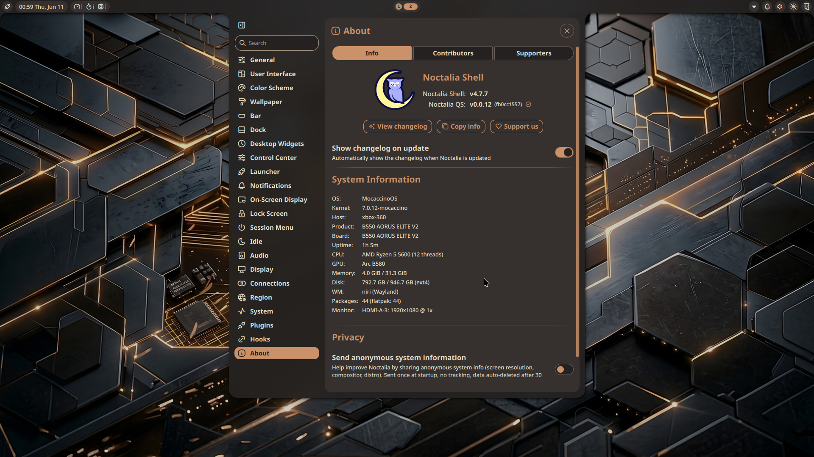

Niri + Noctalia on MocaccinoOS
From Discord to Documentation: Setting Up Niri + Noctalia on MocaccinoOS
It started like many things do in open source — with a question in the Discord server.
Someone popped into the channel asking if anyone had managed to get niri running on MocaccinoOS with the Noctalia shell. They’d heard good things about the scrollable-tiling Wayland compositor and wanted to try something different from the usual desktop environments MocaccinoOS ships. Nobody had documented it yet, so I decided to figure it out.

Installing the Pieces
The first step was straightforward enough. layers/niri lives in the default desktop repository:
|
|
For the rest — apps/alacritty, apps/fastfetch, and apps/noctalia — the community repository needs to be enabled first. These provide the terminal emulator, system info tool, and the Quickshell runtime (qs) that Noctalia runs on.
|
|
Configuring Niri
With the packages installed, two things need to be added to ~/.config/niri/config.kdl. First, comment out waybar since Noctalia ships its own panel. Then add the Noctalia startup line:
// spawn-at-startup "waybar"
spawn-at-startup "qs" "-c" "noctalia-shell"
The Grey Square
After logging into niri from SDDM, I was greeted by a grey square and nothing else. No panel, no launcher, just a grey void. Niri was running — but nothing else was.
The qs binary was there (/usr/bin/qs), the spawn-at-startup line was in the niri config, and journalctl showed that qs had actually launched and consumed memory for 16 seconds before silently dying. Something was wrong, but nothing was complaining about it.
The culprit turned out to be simple: ~/.config/quickshell/noctalia-shell/ didn’t exist. The apps/noctalia package installs the qs binary but not the shell configuration itself. Quickshell found nothing to run and exited cleanly without a word.
The Missing Piece
Noctalia’s shell configuration needs to be installed manually to the home directory. It’s a deliberate separation — the runtime is packaged, but the shell itself is user-owned configuration:
|
|
After that, logging back into niri brought up Noctalia in all its glory — wallpaper-based color scheme, notification center, app launcher, the works.
One More Thing
With Noctalia running, I tried launching Steam and hit a familiar wall: “Unable to open a connection to X”. Niri is a pure Wayland compositor and doesn’t include XWayland out of the box. For X11 applications like Steam to work, xwayland-satellite is needed. Niri’s own log had been warning about this from the start:
WARN niri: error spawning xwayland-satellite, disabling integration: No such file or directory
|
|
The Complete Recipe
A Discord question turned into a complete setup guide. The full recipe for getting niri + Noctalia running on MocaccinoOS:
- Install
layers/nirifrom the desktop repository - Install
apps/alacritty,apps/fastfetch, andapps/noctaliafrom the community repository - Run the curl command to install the Noctalia shell config to your home directory
- Log out and select Niri from your login manager’s session menu
- Optionally install
apps/xwayland-satellitefor X11 app compatibility
It’s a small setup cost for a genuinely beautiful and different desktop experience. The full instructions are now on the MocaccinoOS desktop environments page.
And if you run into a grey square — you know what to do.